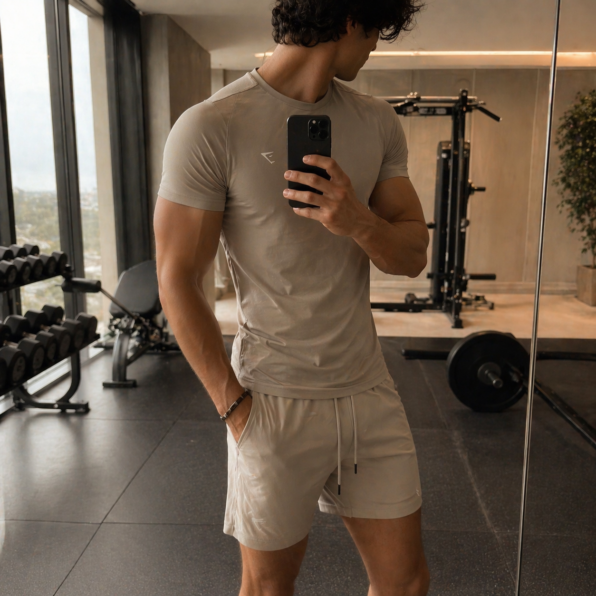
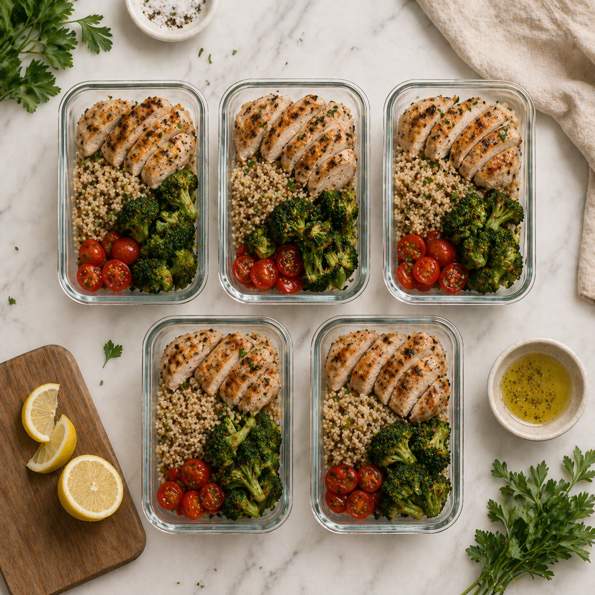
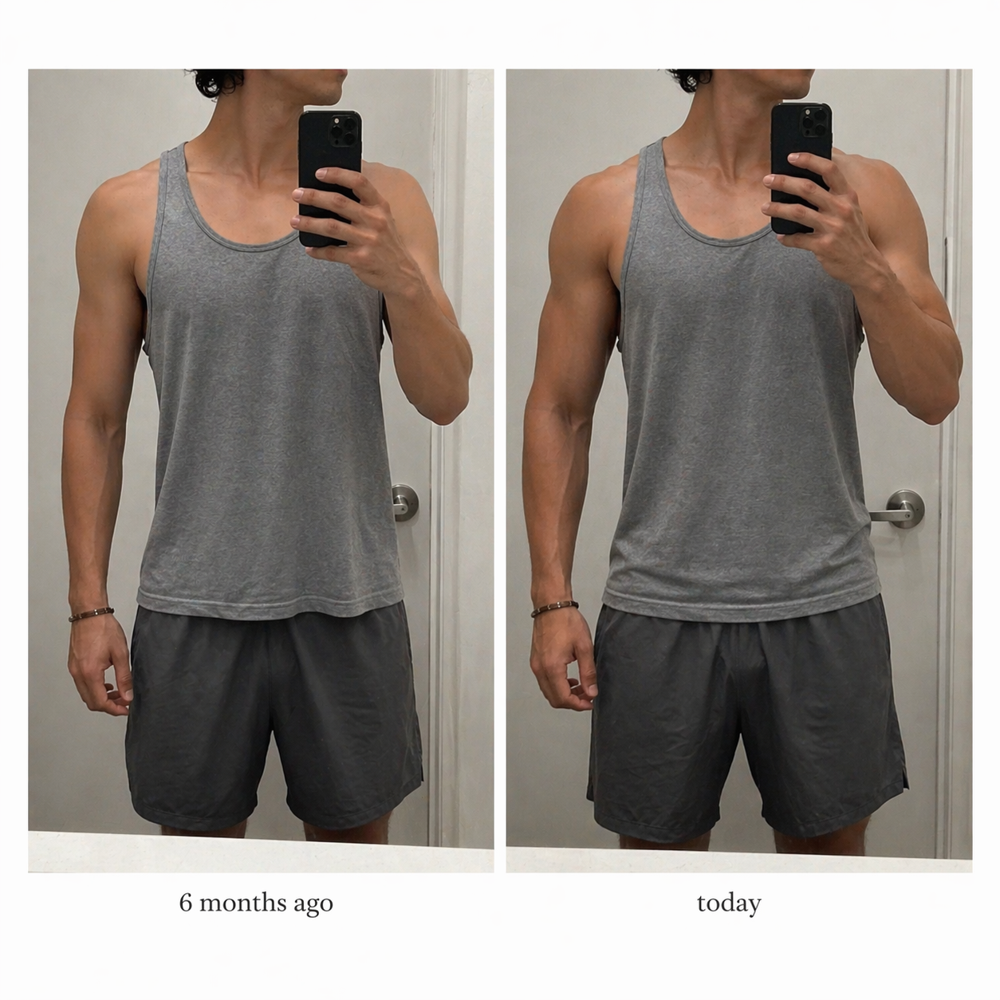

The Perfect Day
✨ Lifestyle · Fitness · Mindset
Become your best self 💪
■ Beiträge
◎ Reels
◫ Markierungen


„Disziplin ist die Brücke zwischen Zielen und Erfolg."

Posting-Rhythmus
Frequenz
täglich
Folgt vor allem …
- @morning.motivationMindset · 3.8k
- @fitfam_dailyFitness · 5.1k
- @clean.eats.studioLifestyle · 4.4k
- @discipline.over.motivationZitate · 6.2k
- @aestheticgymlifeFitness · 3.9k
Top-Kommentare auf eigenen Posts
„goals 🔥"× 47
„inspo!"× 31
„wie machst du das?"× 18
„🙌🙌🙌"× 12
Eigene Kommentar-Aktivität
3
Antworten / Woche
selten
manchmal
oft
theperfectday.official
heute · 07:12
♡💬↗
⌘
412 „Gefällt mir"-Angaben
theperfectday.official
Morning grind. 5:30 Uhr, kein Snooze. Der Tag beginnt bevor die Ausreden wach sind.
Alle 47 Kommentare ansehen
theperfectday.official
gestern · 19:45
„Disziplin ist die
Brücke zwischen
Zielen und Erfolg."
Brücke zwischen
Zielen und Erfolg."
The Perfect Day
♡💬↗
⌘
638 „Gefällt mir"-Angaben
theperfectday.official
Speichern, wenn du es heute brauchst. Teilen, wenn du jemanden kennst, der es braucht.
Alle 74 Kommentare ansehen